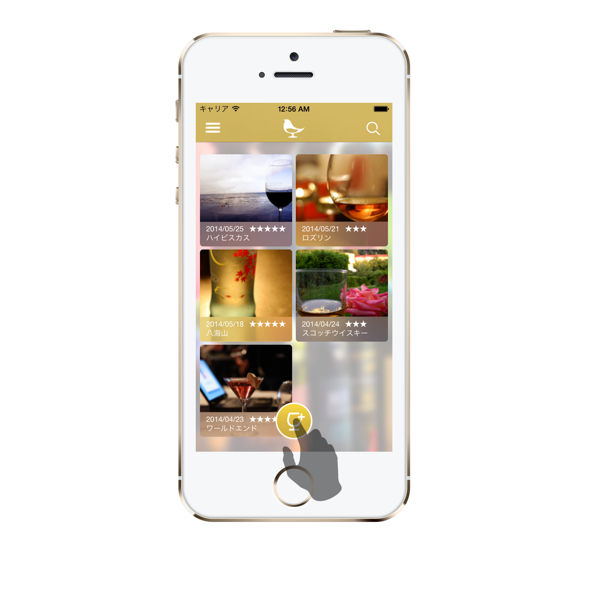
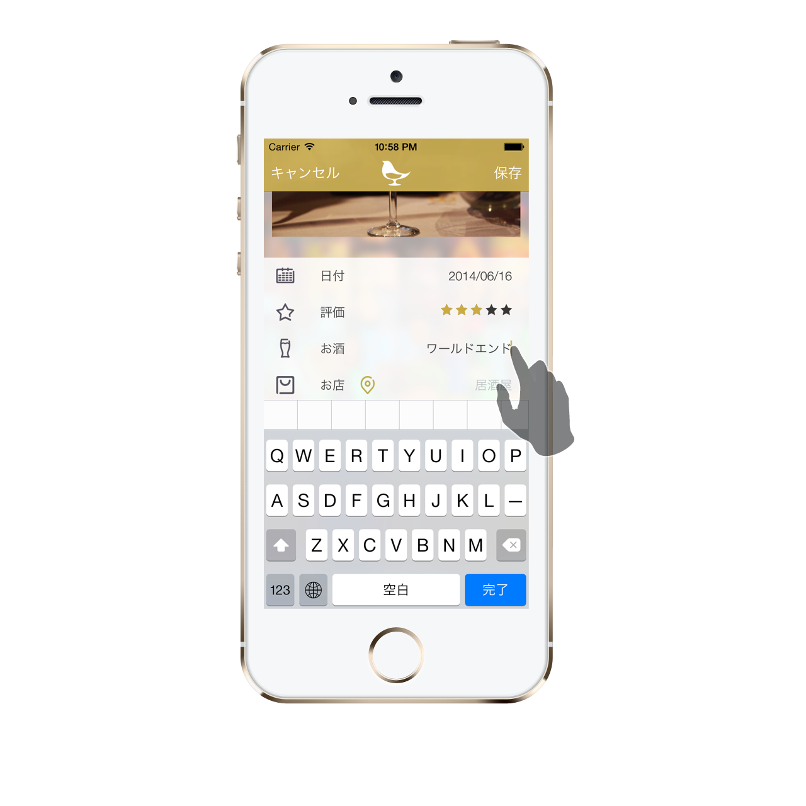
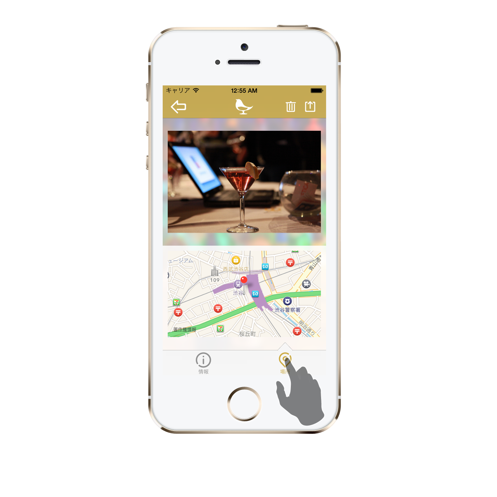
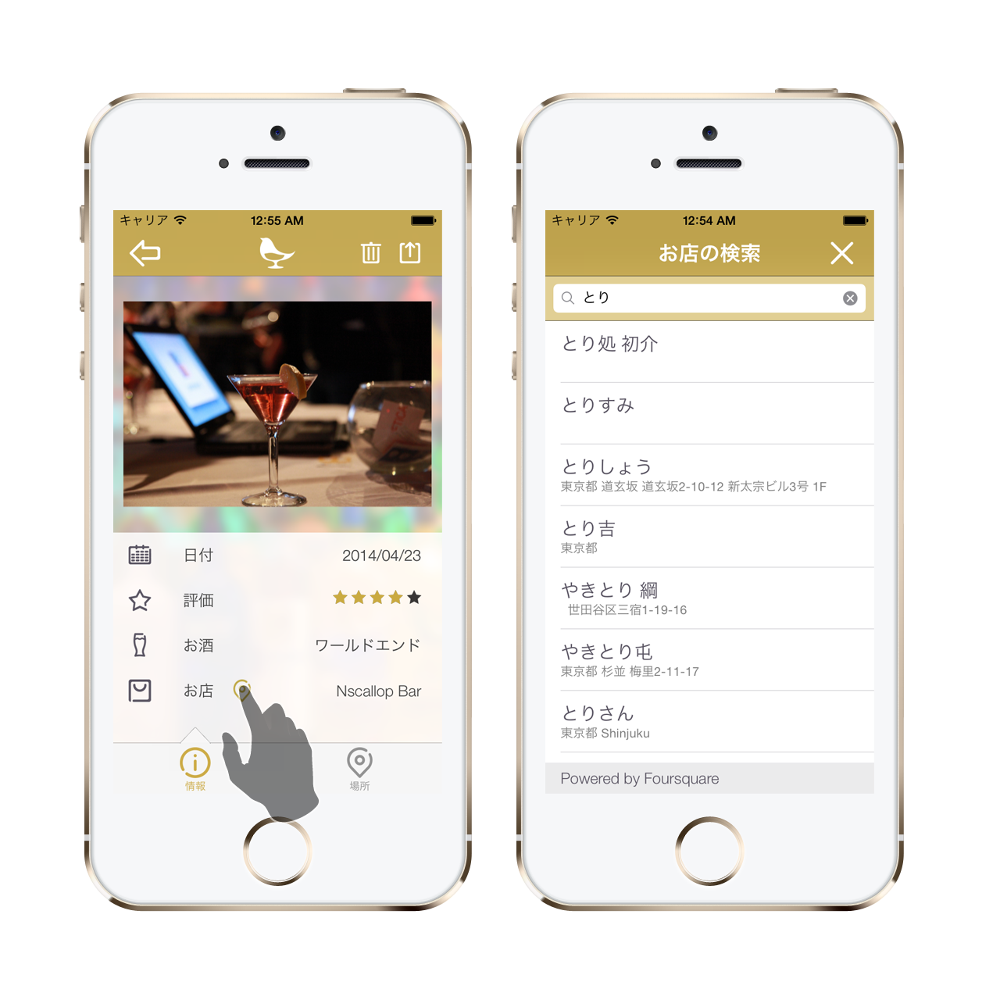
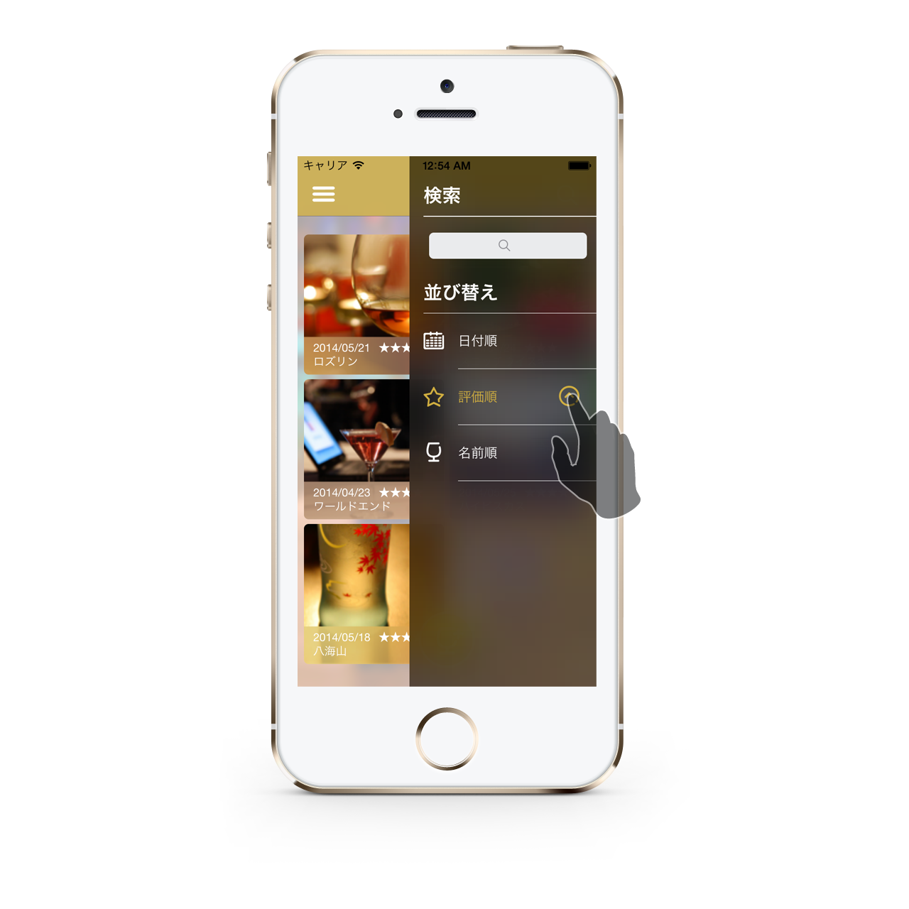
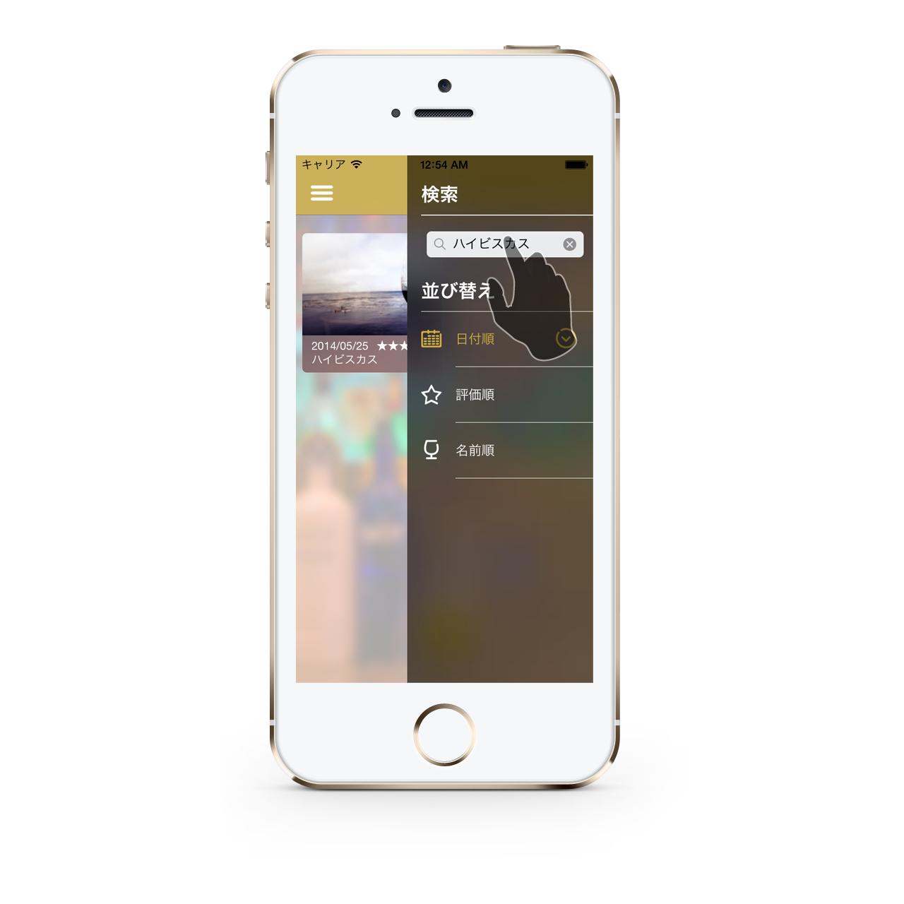
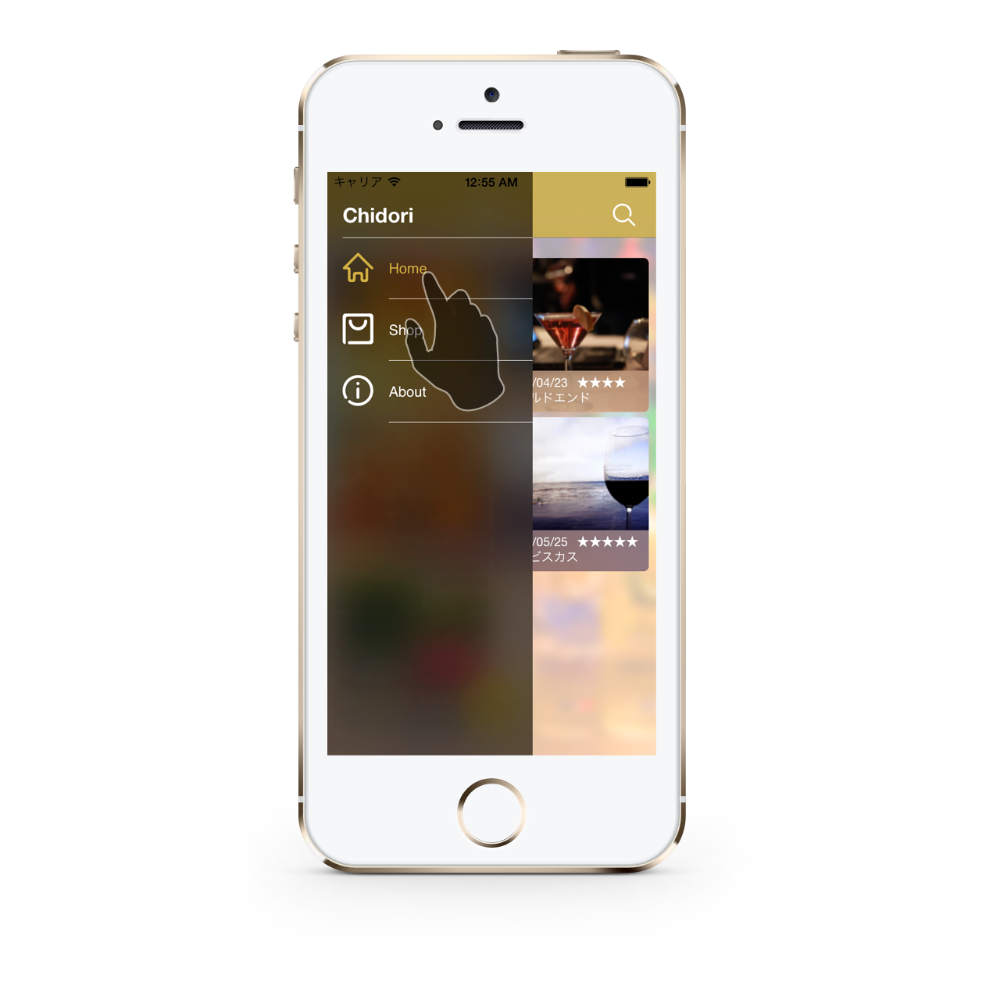

お酒の写真を撮る

TOP画面。ログ一覧を確認できます。画面下部にあるボタンからログを追加できます。

ログの写真は、カメラまたはライブラリから追加できます。
お酒について入力する

ログには、写真のほか、日付、評価、酒、店情報を記録できます。

位置情報も記録することができます。ピンの位置は地図を長押しすることで変更することができます。

お店の横にあるボタンからFoursquareで居酒屋を検索できます。
メニュー

右側のメニューからログの並び替えができます。

右側のメニューからログの検索もできます。

左側のメニューからお店一覧画面などに切り替えることができます。